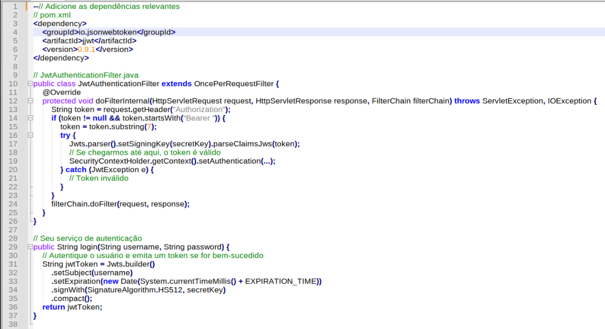
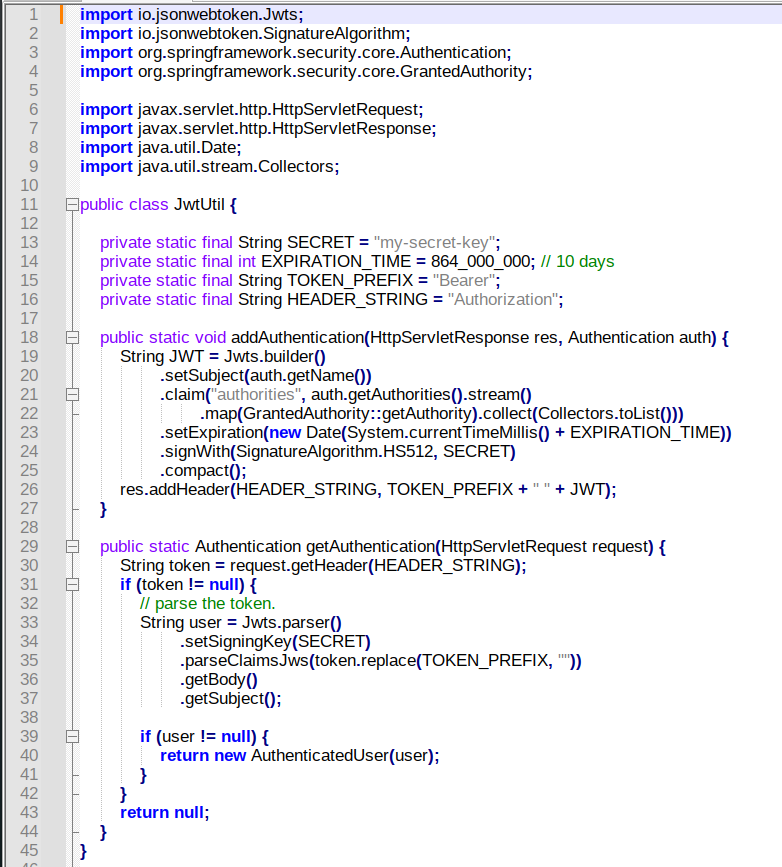

Segurança De Microserviços
Seguranças de Microserviços com JWT
Segurança de Microserviços
A autenticação JWT (JSON Web Token) tem se destacado como uma solução popular para garantir a segurança e a integridade das comunicações em microserviços.
Microserviços são uma abordagem de arquitetura de software que divide uma aplicação em uma coleção de serviços menores e independentes, que são desenvolvidos, implantados e escalados individualmente. Cada microserviço é responsável por uma funcionalidade específica e pode ser desenvolvido usando diferentes tecnologias, dependendo das necessidades da funcionalidade.
A segurança em microserviços, ela é extremamente importante por várias razões:
1. Isolamento de falhas: Como cada microserviço é independente, uma falha em um serviço não afeta diretamente os outros. No entanto, se a segurança de um serviço for comprometida, pode haver um risco para os outros serviços. Portanto, cada serviço deve ser seguro para garantir o isolamento completo.
2. Proteção de dados: Cada microserviço pode ter acesso a diferentes tipos de dados. É crucial garantir que apenas serviços autorizados tenham acesso a dados sensíveis.
3. Autenticação e autorização: Em uma arquitetura de microserviços, cada serviço pode precisar autenticar e autorizar as solicitações. Implementar a segurança em cada serviço garante que apenas solicitações legítimas sejam atendidas.
4. Comunicação segura: Os microserviços geralmente se comunicam entre si através de redes, o que pode ser vulnerável a ataques. A implementação de protocolos de comunicação seguros, como HTTPS, é fundamental.
Portanto, a segurança é uma consideração essencial ao projetar e implementar microserviços. Ela deve ser integrada em todas as fases do ciclo de vida do desenvolvimento de software para garantir a robustez e a confiabilidade do sistema como um todo.
Vamos entender a diferença entre autenticação e autorização, especialmente em um ambiente de microserviços:
1. Autenticação: É o processo de verificar a identidade de um usuário, dispositivo ou sistema. Em outras palavras, é como o sistema responde à pergunta \"Quem é você?\". Em um ambiente de microserviços, a autenticação é crucial para garantir que cada solicitação venha de uma fonte legítima. Isso geralmente é feito através de tokens de autenticação, como JWT (JSON Web Tokens), que são gerados após o usuário fornecer credenciais válidas.
2. Autorização: Uma vez que a identidade é verificada (autenticação), a autorização é o processo de verificar o que o usuário, dispositivo ou sistema autenticado tem permissão para fazer. É como o sistema responde à pergunta \"O que você tem permissão para fazer?\". Em um ambiente de microserviços, a autorização é usada para garantir que um serviço só possa realizar ações que estão dentro de suas permissões designadas.
Ambos, autenticação e autorização, são necessários em um ambiente distribuído como microserviços para garantir a segurança do sistema. A autenticação garante que os usuários são quem afirmam ser, enquanto a autorização garante que eles só podem fazer o que têm permissão para fazer. Isso ajuda a proteger os dados e funcionalidades do sistema contra acesso e uso indevidos.
JSON Web Token (JWT) é um padrão aberto (RFC 7519) que define uma maneira compacta e independente de transmitir informações entre partes como um objeto JSON. Essas informações podem ser verificadas e confiáveis porque são assinadas digitalmente.
Um JWT é composto por três partes: Header, Payload e Signature.
1. Header: O cabeçalho geralmente consiste em dois componentes: o tipo do token, que é JWT, e o algoritmo de assinatura, como HMAC SHA256 ou RSA.
2. Payload: O payload contém as reivindicações, que são declarações sobre uma entidade (geralmente o usuário) e metadados adicionais. Existem três tipos de reivindicações: registradas, públicas e privadas.
3. Signature: A assinatura é usada para verificar que o remetente do JWT é quem diz ser e para garantir que o conteúdo não foi alterado.
Essas três partes são codificadas em Base64 e separadas por pontos.
Em um ambiente de microserviços, o JWT é adequado para autenticação por várias razões:
- Sem estado: Cada token é autocontido, contendo todas as informações necessárias para autenticar o usuário. Isso permite que o serviço que recebe o token valide-o independentemente de outros serviços, o que é ideal para um ambiente de microserviços onde os serviços podem ser distribuídos.
- Leve: Como os JWTs são codificados como um string compacto, eles podem ser enviados através de uma URL, em um cabeçalho HTTP, ou no corpo de uma solicitação HTTP POST.
- Segurança: Os JWTs podem ser assinados e criptografados para proteger as informações que eles carregam.
O JWT oferece uma maneira eficaz e segura de lidar com a autenticação em um ambiente de microserviços.
Na visão geral de como você pode implementar a autenticação JWT em um microserviço usando Java e Spring Boot:
Dependências: Primeiro, você precisará adicionar as dependências relevantes ao seu arquivo pom.xml ou build.gradle. Isso incluirá o Spring Security e a biblioteca jjwt para trabalhar com JWTs.
Configuração do Spring Security: Você precisará configurar o Spring Security para usar JWTs para autenticação. Isso geralmente é feito em uma classe de configuração que estende WebSecurityConfigurerAdapter. Aqui, você pode especificar que deseja usar a autenticação baseada em token e fornecer um JwtAuthenticationFilter personalizado.
JwtAuthenticationFilter: Este é um filtro personalizado que intercepta solicitações e extrai o token JWT do cabeçalho Authorization da solicitação. Em seguida, valida o token e configura o SecurityContext com um Authentication que é construído a partir do token.
Geração de Token: Quando um usuário faz login com sucesso, você precisará gerar um token JWT para eles. Isso pode ser feito usando a biblioteca jjwt. O token deve incluir detalhes do usuário e um carimbo de data/hora de expiração.
Validação de Token: Quando uma solicitação chega com um token JWT, você precisará validar o token. Isso inclui verificar a assinatura e a data de expiração do token, bem como quaisquer outras reivindicações que você possa ter incluído no token.
Vamos ver um exemplo de código simplificado para ilustrar esses passos:

Exemplo de código e a dependência JJWT em Maven para autenticação com JWT.
A Autenticação JWT oferece escalabilidade ao permitir que sistemas distribuídos autentiquem usuários sem a necessidade de um estado de sessão centralizado, melhorando assim a capacidade de lidar com um grande número de solicitações. Além disso, os JWTs são compactos e podem ser transmitidos facilmente, o que melhora o desempenho ao reduzir a sobrecarga de rede. Finalmente, a natureza autocontida dos JWTs facilita a integração entre diferentes serviços em um ambiente de microserviços, pois cada serviço pode validar os tokens de forma independente.
Agora vamos ver um exemplo simplificado de como você pode implementar a autenticação JWT em um microserviço usando Java e Spring Boot:

Exemplo de autenticação com a biblioteca JJWT do Spring Boot.
Este código define uma classe JwtUtil que tem dois métodos principais: addAuthentication e getAuthentication.
O método addAuthentication é chamado quando um usuário faz login com sucesso. Ele gera um token JWT e o adiciona ao cabeçalho Authorization da resposta HTTP.
O método getAuthentication é chamado para cada solicitação autenticada. Ele extrai o token JWT do cabeçalho Authorization da solicitação, verifica o token e retorna um objeto Authentication se o token for válido.
Note que este é um exemplo simplificado e não inclui muitos aspectos importantes de uma implementação real, como o tratamento de exceções e a segurança da chave secreta. Recomendo que você consulte a documentação oficial do Spring Security e JJWT para obter mais detalhes e melhores práticas. Além disso, sempre teste seu código cuidadosamente para garantir que a segurança esteja funcionando como esperado.
Saiba que a autenticação JWT (JSON Web Token) é uma solução eficaz para garantir a segurança em microserviços, uma arquitetura de software que divide uma aplicação em serviços menores e independentes. A segurança é crucial em microserviços para o isolamento de falhas, proteção de dados, autenticação e autorização, e comunicação segura. A autenticação JWT, que é o processo de verificar a identidade de um usuário, e a autorização, que é o processo de verificar o que o usuário autenticado tem permissão para fazer, são essenciais para a segurança de um sistema.